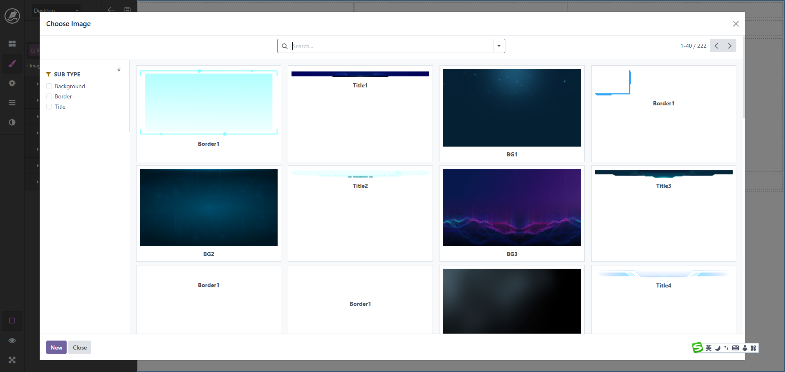

By adding view_mode: 'kanban' in context, the dialog will display
records in kanban format, perfect for scenarios with image displays, providing a more intuitive
visual experience.
By adding show_search_panel parameter in context, the dialog will
display search panel, allowing users to quickly filter and locate required records.
Odoo native dialog only supports list display by default, which is not user-friendly for scenarios with image displays.
Native dialogs don't support search panels, making it difficult for users to find specific records in large datasets.
This module perfectly solves these problems, providing better user experience and efficient data filtering capabilities.
When calling the dialog, add in context:
context: {
view_mode: 'kanban'
}When calling the dialog, add in context:
context: {
show_search_panel: true
}More intuitive product image display
Customer avatars and card-style info
Project thumbnails and status display
Document and media file preview
Fully compatible with Odoo native dialogs, no need to modify existing code
Takes effect immediately after installation, controlled by simple context parameters
Based on Odoo standard architecture, ensuring system stability and security
This module is compatible with Odoo 18.0. After installation, no additional configuration is needed,
just control the features through context parameters when calling SelectCreateDialog:
Kanban View: context: {view_mode: 'kanban'}
Search Panel: context: {show_search_panel: true}
Both Features: context: {view_mode: 'kanban', show_search_panel: true}
Provide better user experience, make data selection simple and efficient
context: {show_search_panel: true}context: {view_mode: 'kanban', show_search_panel: true}
Provide better user experience, make data selection simple and efficient